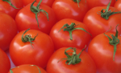

Ch'est eune tchestchion qu'nou-s'a entr'-entchêté d'pis la fais qu'les Ûropéens avaient crouaîsi l'Atlantique pouor la preunmié fais et rapporté des nouvieauté qu'il' y dêmuchîtent: Ch'est-i' qu'la tonmate est un frit ou eune lédgeunme?
Botanniquement, ch'est un frit sans doute - eune manniéthe dé chérîthe tch'a des graines dédans. Mais gastrononmiquement l'affaithe est bein mains cliaithe: nou mange des tonmates dans des salades, et dans d's êtchuivées et des soupes et nou-s'en fait eune sauce pouor êtrueûler sus ses saûciches et san lard feuntchi quand nou mange un grand dêjeûner. Et nou-s'a même lé pouôrre êtchivalent des pais au fou - des pais en sauce dé tonmates en tinnes.
Assa, nou mange tant d'tonmates et y'a tant d'spécialités régionales bein connues en Ûrope qué ch'est dû d'craithe qu'la tonmate 'tait d'tchi înconnu dans l'Vièr Continnent d'vant l'seizième siècl'ye, et ch'tait raîque au dgiêx-neuvième siècl'ye qu'la tonmate dévînt acceptabl'ye au monde coumme fricot. Ch'est en tchi les preunmié tonmates tchultivées en Ûrope 'tait p'tites, suthes et jaunes et les riches les tchultivaient pus à co pouor la bieauté des frits. Nou l's app'lait des pommes d'or - et en Italien la tonmate a nom pomodoro au jour d'aniet. Nou faîthait sèrvi des tonmates coumme méd'cinne ofûche mais y'avait eune crianche généthale qu'la tonmate 'tait pouaîsonneuse - ou au mains qu'nou pouôrrait mangi des tonmates tchultivées dans des pays cauds mais hors les pays bein cauds i' n'tait pon d'mêtchi d'mangi les tonmates.
Même en Améthique du Nord, la tchultivation d'tonmates n'avanchait dgéthe d'vant l'mitan du dgiêx-neuvième siècl'ye. Mais pouor la fîn du siècl'ye la tonmate 'tait populaithe, sustout auve l'învention du fricot en tinnes, v'là tchi voulait dithe qué nou pouvait prêsèrver aîsiment la tonmate et la mangi en toute saîson à bouôn marchi.
Les preunmié expéthînments pouor craître des tonmates en Jèrri prîntent pliaiche au c'menchement du vîngtchième siècl'ye et bétôt la tonmate dévînt un export assez împortant d'Jèrri, sans tréjous m'nichi la priorité d'la patate. Ès années 1970s hardi d'clios tchi soulaient êt' pliantés d'tonmates fûtent pliantés d'aut's lédgeunmes ou bâtis sus auve des sèrres. Épis au vîngt-tch'ieunième siècl'ye la tchultivâtion d'tonmates en Jèrri pouor l'export est quâsiment péthînmée, enfachie par la contchuthence et l'couôtage d'l'agritchultuthe et les d'mandes des grands supèrmarchièrs pouor eune quantité asseûthée.
Viyiz étout: